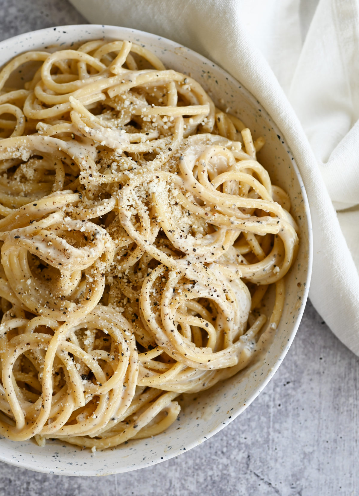

Cacio e Pepe

Cacio e Pepe is a favorite dish of mine, particularly when I'm in no mood to cook anything more complex and I've already changed into sweatpants for the evening. If you like spaghetti noodles and parmesan cheese, then I can guarantee you'll like this dish just as much as I do.
Ingredients
1.5 cups (55 grams) of grated Romano cheese
3/4ths cup (25 grams) of Parmesan cheese
~2.5 tablespoons (~37 ml) of extra-virgin olive oil
1 tablespoon (15 grams) of ground black pepper, more or less to taste
Half pound (227 grams) of dry spaghetti
1 tablespoon (15 grams) of kosher salt
Steps
- Combine Romano and Parmesan cheese, olive oil, and ground black pepper in a large mixing bowl. Work the ingredients together with the back of a wooden spoon until a paste begins to form. Set aside.
- Put dry spaghetti into pot or saucepan. Fill with just enough water to cover. Put tablespoon of salt into water, cover with lid, bring to boil.
- When the water reaches a boil, remove lid and maintain a simmer. Stir pasta regularly. After 5 minutes, ladle out half a cup of pasta water and add to your cheese paste from step one
- When the spaghetti reaches desired doneness, remove directly from the cooking water and allow to briefly drain before placing it into the bowl with cheese paste.
- Work the pasta and cheese sauce together, until properly coated. Serve while hot.
Return Home